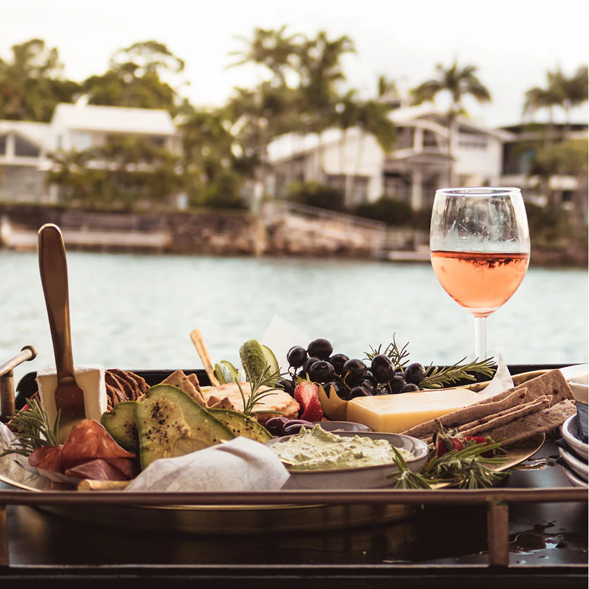

The Pinot Noir and Glera grapes are picked and fermented into wine separately to enhance the characteristics of their varieties as much as possible, and the blend is only created during the secondary fermentation process.
Stefano Nandi Wine Director at Montelvini Group. Born in Montebelluna, just a few Km from Montelvini, on the 11/11/1969, Stefano has always been passionate about wine, as most people are, in this rich and historical area for wine production. After graduating from the prestigious “Cerletti” Oneology Wine institute in Conegliano, he immediately started his career in the wine business, and after a few experiences, he settled in at Montelvini where he now has been working as Wine Director almost 30 years. His passion and commitment towards Montelvini, have made the winery what it is today. His vast experience allows themus to lead the way with new trends, while keeping their roots in the history of their family.
The province of Treviso is flat and features an abundance of water and waterways. The climate is mild, while the temperature ranges on average from 27ºF in January and February, with rare, sporadic snowfall, to 95ºF in July and August. During ripening, the high difference in temperature between night and day gives the grapes excellent aromatic properties. The average annual rainfall exceeds 35 inches, with peaks typically recorded in autumn, while heavy storms are common in summer. The soil is mainly clayey, with several substrates of limestone and occasionally rock fragments.
We believe the best wine pairings are those you enjoy most! But, if you did want to explore some canned sparkling rosé wine pairings, Archer Roose Bubbly Rosé is remarkably versatile and goes with nearly everything — really — it’s one of our most food-friendly wines.
Pairing Pro Tip: chewy, sticky candy is perfect with Bubbly, as the acidity and bubbles work to un-stick your teeth. Candy charcuterie, anyone?
* Barbeque, other rich or heavy meat dishes
* Creamy, hearty dishes, like risotto
* Brunch!
* Fried foods
* Chocolate desserts, especially chocolate-covered strawberries
* Goat cheese, feta, halloumi, Burrata
Chef Adam Moore has created globally-inspired dishes which celebrate our wine regions, and Veneto is known for its fresh, high-quality, yet simple ingredients. Toast to the finer things with our Bubbly Rosé Marinated Tomato + Burrata Bruschetta. It’s the perfect balance of crusty bread, extra virgin olive oil, marinated tomatoes, crispy onions, herbaceous basil and creamy Burrata cheese. The final touch? A drizzle of balsamic glaze and a sip of Bubbly Rosé!